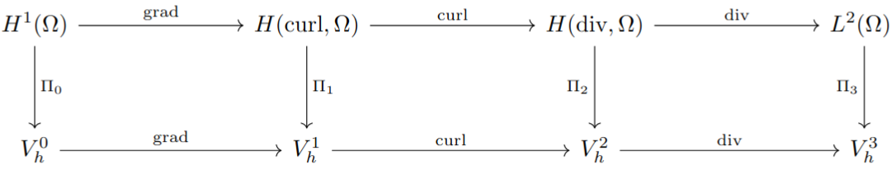
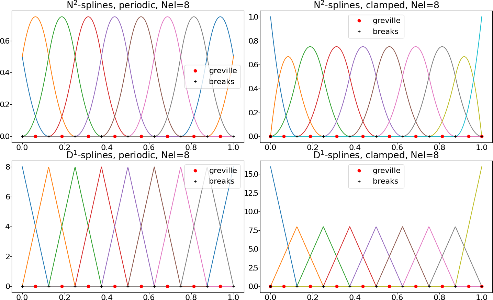
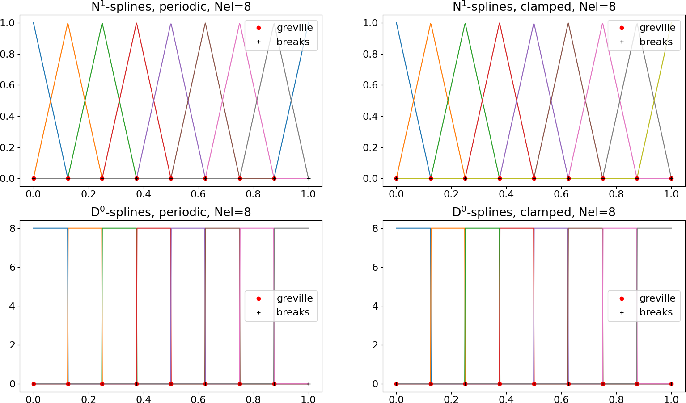
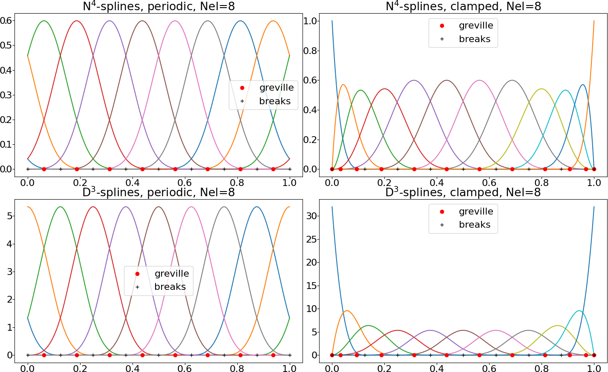
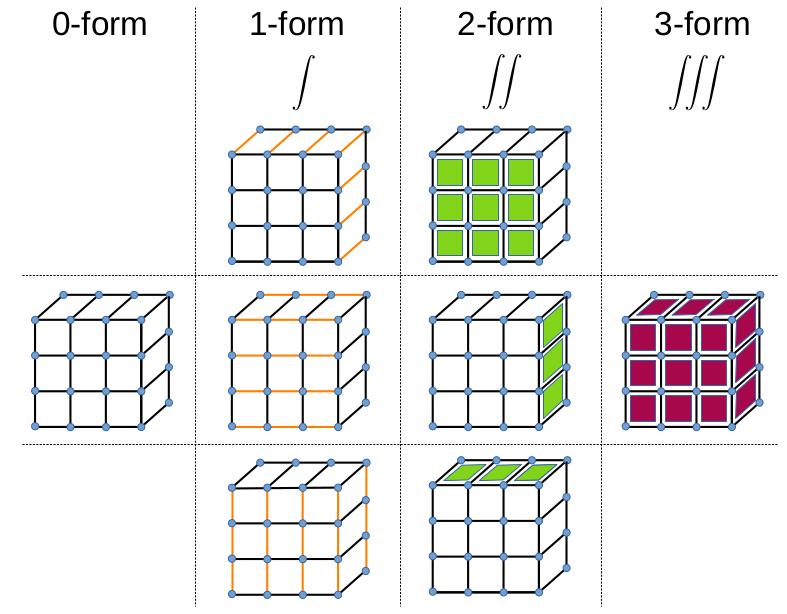
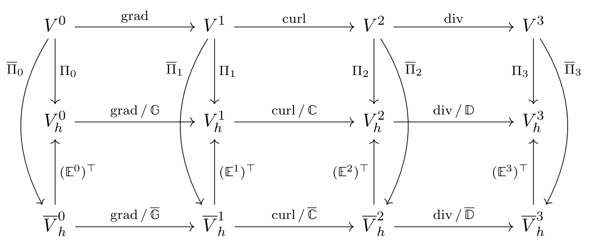

Geometric finite elements (FEEC)#
This page introduces the finite element method used in Struphy for electromagnetic fields and fluid variables. It is based on finite element exterior calculus (FEEC), which grew out of the edge elements of Nédélec[1] and the Whitney forms of Bossavit[2], was developed for electromagnetism by Hiptmair[3] and given its general form by Arnold et al.[4], Arnold et al.[5] (see also the monograph Arnold[6]). Struphy uses the spline version of FEEC, the isogeometric discrete differential forms of Buffa et al.[7], Buffa et al.[8], on a mapped unit cube, together with the C1 polar splines of Holderied and Possanner[9] for domains with a magnetic axis. The combination with particle-in-cell methods follows the GEMPIC framework [10]; its use in MHD-kinetic hybrid models is described in Holderied et al.[11], Possanner et al.[12]. A list of all references is at the end of the page.
Overview#
In a conforming finite element (FE) method, a function \(u \in V\) in a function space \(V\) is approximated as
where \(\Lambda_i \in V\) are linearly independent basis functions, \((u_i)_i \in \mathbb R^M\) are the FE coefficients and \(M\) is the dimension of the subspace \(V_h \subset V\) spanned by the basis functions. Unlike in spectral methods, each \(\Lambda_i\) has a local support around some grid point. Since \(u_h \in V\), the discrete function has the same regularity as the continuous one, which leads to an elegant analysis of the method. Implementing a FE method means writing a system of equations for the coefficients \((u_i)_i\), while the basis functions are fixed.
Maxwell’s equations, the MHD equations and many other field equations of plasma physics contain the operators grad, curl and div, and their solutions satisfy constraints such as \(\nabla \cdot \mathbf B = 0\) or Gauss’ law. A FE method in which each variable is approximated in a space adapted to its operator (and not, for instance, every vector component in the same scalar space) keeps the structure of these equations on the discrete level. In Struphy, the FEEC spaces guarantee that
the discrete derivatives satisfy \(\textnormal{curl}\,\textnormal{grad} = 0\) and \(\textnormal{div}\,\textnormal{curl} = 0\) exactly, so that e.g. \(\nabla \cdot \mathbf B_h = 0\) holds pointwise for all times if it holds initially;
the discrete derivatives of tensor-product splines are matrices with entries \(0\) and \(\pm 1\) that do not depend on the mapping of the domain: the geometry enters only through mass matrices (with polar splines, the extraction operators at the pole also depend on the mapping);
projections of continuous functions into the discrete spaces commute with the derivatives;
the discrete curl-curl and grad-div operators have no spurious eigenmodes (spectral correctness) [3][13];
the semi-discrete equations inherit the energy conservation and the Hamiltonian (or variational) structure of the continuous models, which can then be preserved in time with suitable integrators [10].
The basis functions in Struphy are tensor-product B-splines [14] on the unit cube
\([0, 1]^3\), the logical domain. The physical domain is the image of the unit cube under a mapping, see
Geometry, and the equations are written on the logical domain with the transformation rules of
differential forms (Differential forms on mapped domains). The splines and the parallel linear algebra are provided by the library
feectools, a fork of Psydac [15] maintained for
Struphy; the entry point in Struphy is the class Derham.
The sections of this page are:
The de Rham complex: the continuous spaces and the de Rham diagram,
Differential forms on mapped domains: pullbacks of scalar and vector fields to the unit cube,
Uni-variate spline spaces and Tensor-product spline spaces: the discrete spaces,
Discrete derivatives and Commuting projectors: derivatives and projections,
Mass matrices and weak derivatives: mass matrices, weak derivatives and the example of Maxwell’s equations,
Boundary conditions, Polar splines and Linear solvers and preconditioners.
The de Rham complex#
The FEEC spaces in 3D are a sequence of discrete (finite-dimensional) spaces \(V_h^n,\,0\leq n \leq 3\), that satisfy the 3D de Rham diagram:

Fig. 1: 3D de Rham diagram.#
The upper row is a sequence of continuous function spaces on a domain \(\Omega\):
\(H^1(\Omega)\): functions \(f \in L^2(\Omega)\) with \(\nabla f \in (L^2(\Omega))^3\),
\(H(\textnormal{curl}, \Omega)\): functions \(\mathbf u \in (L^2(\Omega))^3\) with \(\nabla \times \mathbf u \in (L^2(\Omega))^3\),
\(H(\textnormal{div}, \Omega)\): functions \(\mathbf u \in (L^2(\Omega))^3\) with \(\nabla \cdot \mathbf u \in L^2(\Omega)\),
\(L^2(\Omega)\): square-integrable functions.
These spaces are discussed in many textbooks on mixed finite elements, for instance Brezzi and Fortin[16], Boffi et al.[13] and, for Maxwell’s equations, Monk[17]. Struphy uses a conforming method,
Both the continuous and the discrete spaces form a complex: the image of each operator lies in the kernel of the next one,
on both levels. The vertical arrows are projectors \(\Pi_n,\,0\leq n \leq 3\) (\(\Pi_n^2 = \Pi_n\)) into the discrete spaces,
and the diagram commutes:
The commuting projectors are the key tool in the analysis of FEEC [4][5]: together with the complex property, they imply that the discrete spaces inherit the kernels of the derivatives (for example, discrete curl-free fields are discrete gradients on simply connected domains), and from this the stability and spectral correctness of the method.
In the language of differential geometry, the four spaces contain the coefficient functions (“proxies”) of \(0\)-, \(1\)-, \(2\)- and \(3\)-forms, and grad, curl and div are the exterior derivative \(\textnormal d\) acting on these forms. We therefore call elements of \(V_h^n\) also discrete \(n\)-forms. This viewpoint explains how the spaces transform under a change of coordinates, discussed next.
Differential forms on mapped domains#
All equations in Struphy are discretized on the logical unit cube \(\hat \Omega = (0, 1)^3\) with coordinates \(\boldsymbol \eta = (\eta_1, \eta_2, \eta_3)\). The physical domain \(\Omega\) with Cartesian coordinates \(\mathbf x\) is the image of a mapping \(F: \hat\Omega \to \Omega,\, \boldsymbol \eta \mapsto \mathbf x\), with Jacobian matrix \(DF\), metric tensor \(G = DF^\top DF\) and Jacobian determinant \(\sqrt g = \det DF > 0\) (only right-handed mappings are allowed). The available mappings are listed in Geometry.
A scalar or vector field on \(\Omega\) has several representations on \(\hat \Omega\), which differ in how they transform. Given a scalar function \(p(\mathbf x)\) and a vector field \(\mathbf E(\mathbf x)\), the pullbacks are
The components of the 1-form are the co-variant components of \(\mathbf E\), those of the vector field the
contra-variant components; the 2-form and the 3-form are densities (they carry the volume element \(\sqrt g\)).
The physical meaning of a variable decides its representation: \(\hat p^0\) for a quantity that is evaluated at
points (a potential), \(\hat{\mathbf E}^1\) for a quantity integrated along curves (an electric field),
\(\hat{\mathbf B}^2\) for a flux through surfaces (a magnetic field) and \(\hat n^3\) for a quantity integrated
over volumes (a density). Vector fields, e.g. a fluid velocity \(\hat{\mathbf u}\), are approximated in the space
\((V_h^0)^3\) ("H1vec" in Struphy).
The derivatives commute with the pullbacks:
where \(\hat \nabla = (\partial_{\eta_1}, \partial_{\eta_2}, \partial_{\eta_3})\). In words: the gradient of a 0-form is a 1-form, the curl of a 1-form is a 2-form and the divergence of a 2-form is a 3-form, and in each case the logical derivative is the plain derivative in \(\boldsymbol \eta\), independent of the mapping. The metric appears only in the \(L^2\) inner products, for instance
which define the mass matrices in Mass matrices and weak derivatives. The pullback of a whole model is worked out in Pull-back to the logical domain of the Vlasov-Maxwell example. In what follows we drop the hats; all spaces live on the unit cube.
Uni-variate spline spaces#
Finite element spaces in Struphy are built from uni-variate B-spline spaces on the interval \(\eta \in [0, 1]\), as introduced for instance in Section 2.2 of Hughes et al.[14]. B-spline basis functions of degree \(p\) are denoted by \(N_i^p(\eta)\) (called N-splines in the following). They are piecewise polynomials with a regularity of at most \(p-1\) (they are piecewise constants for \(p=0\)). Linear combinations of these basis functions give a spline function
where \(\mathbf f = (f_i)_{i=0}^{n-1} \in \mathbb R^n\) are the spline coefficients and \(n\) is the dimension of the spline space. Struphy supports two kinds of splines in each direction: periodic or clamped. For clamped splines, the first and last basis functions are interpolatory at \(\eta=0\) and \(\eta=1\), respectively, meaning that \(f_h(0) = f_0\) and \(f_h(1) = f_{n-1}\). If the interval \([0, 1]\) is split into \(n_\textnormal{el}\) cells (elements), the dimension of the periodic space is \(n = n_\textnormal{el}\), and that of the clamped space is \(n = n_\textnormal{el} + p\). Fig. 2 shows the spline basis functions of degree \(p=2\) on \(n_\textnormal{el}=8\) cells.

Fig. 2: Uni-variate spline spaces of degree \(p=2\).#
In Fig. 2 the black crosses are the break points (cell interfaces) and the red dots are the Greville points, which are the interpolation points of the commuting projectors (see Commuting projectors). The second row shows the D-splines, which are related to the derivatives of N-splines via
D-splines are B-splines of degree \(p-1\) rescaled to unit integral, \(\int_0^1 D^{p-1}_i \,\textnormal d \eta = 1\), which makes them the natural basis for histopolation. In the clamped case the dimension \(d\) of the D-spline space is one less than that of the N-splines, \(d = n - 1\), and \(D^{p-1}_{-1} = D^{p-1}_{n-1} = 0\); in the periodic case \(d = n\). The pair (N-splines, D-splines) is the uni-variate de Rham complex: the derivative maps the space of N-splines onto the space of D-splines in the clamped case, and onto the D-spline functions with zero mean in the periodic case.
Fig. 3 shows the uni-variate spline spaces for degree \(p=1\). Here the D-splines are piecewise constants and a D-spline function is in general not continuous.

Fig. 3: Uni-variate spline spaces of degree \(p=1\).#
N-splines in Struphy have the maximal regularity \(C^{p-1}\), and the support of each basis function spans \(p+1\) adjacent cells. A higher degree gives smoother and more accurate approximations (the error in \(L^2\) decreases like \(h^{p+1}\) for N-splines and \(h^p\) for D-splines, with the cell size \(h\)), at the price of more non-zero entries in the matrices. Fig. 4 shows an example with \(p=4\).

Fig. 4: Uni-variate spline spaces of degree \(p=4\).#
Tensor-product spline spaces#
The discrete spaces \(V_h^n,\,0\leq n \leq 3\) are spanned by tensor products of the uni-variate N- and D-splines of degrees \((p_1, p_2, p_3)\), with dimensions \(n_\mu\) (N-splines) and \(d_\mu\) (D-splines) in direction \(\mu\). A D-spline is used in every direction in which the form is “integrated”, following the pattern of Fig. 1:
Elements of the discrete spaces are linear combinations of the respective basis functions:
A discrete field is thus represented by its FE coefficients \(\mathbf p \in \mathbb R^{N_0}\), \(\mathbf e \in \mathbb R^{N_1}\), \(\mathbf b \in \mathbb R^{N_2}\) and \(\mathbf n \in \mathbb R^{N_3}\), where the space dimensions are products of the uni-variate dimensions:
In Struphy, the spaces, derivatives and projectors are held by the class Derham,
which is created from the grid and the DerhamOptions (degrees, boundary conditions,
quadrature, polar splines) of the parameter file. A discrete field is a
SplineFunction, created with
Derham.create_spline_function(). It has
the property
vectorholding the FE coefficients, with a setter,a
__call__()method for evaluating the spline at (an array of) points \((\eta_{ijk})_{ijk}\).
The coefficient vectors are distributed over the MPI ranks by a domain decomposition of the index space: each rank owns
a block of coefficients in each direction plus ghost regions of width \(p_\mu\) for the overlap with its neighbors
(StencilVector of feectools; a BlockVector of three of them for 1- and 2-forms). Matrices are stored
in the corresponding StencilMatrix format, with band width given by the degrees.
Discrete derivatives#
Because of (2), the derivatives of discrete fields are again discrete fields in the next space, and they act on the FE coefficients only:
The discrete gradient \(\mathbb G \in \mathbb R^{N_1 \times N_0}\), curl \(\mathbb C \in \mathbb R^{N_2 \times N_1}\) and divergence \(\mathbb D \in \mathbb R^{N_3 \times N_2}\) are built from Kronecker products of the uni-variate difference matrix \((\mathbb d \mathbf f)_i = f_{i+1} - f_i\) (from (2)) and identity matrices, for example
Their entries are \(0\) and \(\pm 1\): they are the incidence matrices of the grid (which point bounds which edge, which edge bounds which face, …), as in the discrete exterior calculus. They do not depend on the mapping \(F\) (except for the extraction operators of Polar splines) and they satisfy the complex property exactly, also in floating-point arithmetic:
The derivative matrices are available as Derham.grad, Derham.curl and Derham.div.
A tutorial on derivatives and projectors is Tutorials.
Commuting projectors#
The projectors \(\Pi_n,\, 0\leq n \leq 3\) are used to compute FE coefficients of given functions, e.g. initial conditions or equilibrium fields. They are constructed such that the commuting relations (1) hold. A projector is defined by degrees of freedom (DOFs) \(\sigma^n,\, 0\leq n \leq 3\), which are linear functionals that map continuous functions to real numbers. The number of DOFs of a space equals its dimension. A common DOF is the evaluation of a function at a point of \(\Omega\); choosing \(N_0\) distinct points (the tensor-product Greville points) defines DOFs \((\sigma^0_{ijk})_{i=0, j=0, k=0}^{n_1-1, n_2-1, n_3-1}\) and a projector \(\Pi_0:H^1 \to V_h^0\) by
These are \(N_0\) equations for the coefficients \(\mathbf p \in \mathbb R^{N_0}\) of \(\Pi_0 p \in V_h^0\): classical interpolation. The other projectors are a mix of interpolation and histopolation (integration between two neighboring interpolation points), as depicted in Fig. 5. To project into \(V_h^1\) (1-forms), the first component is histopolated in the \(\eta_1\)-direction (orange lines) and interpolated in \((\eta_2, \eta_3)\) (blue points), and analogously for the second and third components. The DOFs of \(V_h^2\) are integrals over faces (green), and those of \(V_h^3\) integrals over cells (violet). By the fundamental theorem of calculus (and the theorems of Stokes and Gauss), the DOFs of a derivative are differences of the DOFs of the function, with the same incidence matrices as above, e.g. \(\sigma^1(\nabla p) = \mathbb G\, \sigma^0(p)\). This is what makes the diagram commute.


Fig. 5: Degrees of freedom (DOFs) of the commuting projectors.#
On tensor-product spaces, the inter-/histopolation matrices are Kronecker products of uni-variate matrices, and a
projection costs a few 1D banded solves per direction (CommutingProjector).
The projectors are available as Derham.P0, …, Derham.P3 and Derham.Pv (for vector fields in
\((V_h^0)^3\)). Struphy provides further projection operators:
Local commuting projectors (
DerhamOptions(local_projectors=True),CommutingProjectorLocal): quasi-inter-/histopolation, in which each coefficient is computed from function values in a few neighboring cells. No linear system has to be solved, and the projectors still commute with the derivatives.L2 projection (
L2Projector): \((\Pi^{L^2}_n f, \Lambda^n_i)_{L^2} = (f, \Lambda^n_i)_{L^2}\) for all basis functions, which needs a mass-matrix solve. It does not commute with the derivatives, but it only needs integrals of \(f\) against basis functions, which is what particles provide (see Particle-in-cell methods (PIC)).Basis projection operators (
BasisProjectionOperators): matrices of \(\Pi_n (w\, \Lambda^m_j)\) for a fixed weight function \(w\), used for products of a discrete field with a given function, e.g. \(\mathbf B_0 \times \mathbf u\) in linear MHD [11].
Mass matrices and weak derivatives#
The derivative matrices \(\mathbb G, \mathbb C, \mathbb D\) contain no metric. The geometry, as well as material properties and background fields, enter through the mass matrices, the Gram matrices of the \(L^2\) inner products of Differential forms on mapped domains:
so that, for instance, \(\int_\Omega \mathbf E_h \cdot \mathbf F_h \,\textnormal d \mathbf x = \mathbf f^\top \mathbb M^1 \mathbf e\).
The matrices \(\mathbb M^1\) and \(\mathbb M^2\) are \(3 \times 3\) block matrices indexed by
\((\mu, \nu)\); for vector fields in \((V_h^0)^3\) the mass matrix \(\mathbb M^v\) has the weight
\(G \sqrt g\). Mass matrices with an additional weight, written \(\mathbb M^n_w\) (e.g. a density
\(\mathbb M^1_n\) or a background field \(\mathbb M^2_{B_0}\), see the notation rule in the
developer guide), are created by WeightedMassOperators, which also
holds the standard ones (M0, M1, M2, M3, Mv, …). The integrals are computed with Gauss-Legendre
quadrature in each cell.
The mass matrices play the role of the discrete Hodge star: they connect the “strong” derivatives \(\mathbb G, \mathbb C, \mathbb D\) with their weak (dual) counterparts, obtained by integration by parts. For example, the weak divergence \(\textnormal{div}^*_h \mathbf E_h \in V_h^0\) of \(\mathbf E_h \in V_h^1\) and the weak curl \(\textnormal{curl}^*_h \mathbf B_h \in V_h^1\) of \(\mathbf B_h \in V_h^2\) are defined by
(boundary terms vanish for periodic or homogeneous Dirichlet conditions, see Boundary conditions). Each equation of a model is written either in strong form, using \(\mathbb G, \mathbb C, \mathbb D\) directly, or in weak form, using the transposed derivatives together with mass matrices. Equations with particle coupling terms are always written in weak form, because the integrals against basis functions are what the particles deliver (see Particle-in-cell methods (PIC)). Typical symmetric operators are the Laplacian \(\mathbb G^\top \mathbb M^1 \mathbb G\) (Poisson’s equation) and the curl-curl operator \(\mathbb C^\top \mathbb M^2 \mathbb C\).
Example: Maxwell’s equations#
Maxwell’s equations in vacuum (in units with \(c = 1\)) show how this leads to structure preservation:
with a given current density \(\mathbf J\). Faraday’s law contains the curl of \(\mathbf E\), so \(\mathbf E\) is a 1-form and \(\mathbf B = -\int \nabla \times \mathbf E\, \textnormal dt\) a 2-form. Ampère’s law contains the curl of the 2-form \(\mathbf B\) and is therefore written in weak form: find \(\mathbf E_h \in V_h^1\) and \(\mathbf B_h \in V_h^2\) such that
With the FE coefficients this is the system of ordinary differential equations
where \(\mathbf j = (\int \mathbf J \cdot \vec\Lambda^1_{\mu, ijk} \,\textnormal d \mathbf x)_{\mu, ijk} \in \mathbb R^{N_1}\). The geometry is entirely contained in \(\mathbb M^1\) and \(\mathbb M^2\). Three properties of the continuous equations hold exactly for (4), for any mapping and any resolution [18][10]:
Divergence-free magnetic field. Since \(\mathbb D \mathbb C = 0\), \(\frac{\textnormal d}{\textnormal dt} \mathbb D \mathbf b = - \mathbb D \mathbb C \mathbf e = 0\). The coefficients \(\mathbb D \mathbf b\) are those of \(\nabla \cdot \mathbf B_h \in V_h^3\), so \(\nabla \cdot \mathbf B_h = 0\) holds pointwise for all times if it holds initially, e.g. if \(\mathbf B_h(0) = \Pi_2 \mathbf B(0)\) with \(\nabla \cdot \mathbf B(0) = 0\), because \(\nabla \cdot \Pi_2 \mathbf B = \Pi_3 \nabla \cdot \mathbf B = 0\) by (1).
Gauss’ law in weak form. With the weak divergence from above, \(\rho_h := \textnormal{div}^*_h \mathbf E_h\) satisfies \(\mathbb M^0 \dot{\boldsymbol \rho} = -\mathbb G^\top \mathbb M^1 \dot{\mathbf e} = \mathbb G^\top \mathbf j\), since \(\mathbb G^\top \mathbb C^\top = (\mathbb C \mathbb G)^\top = 0\). This is the discrete continuity equation: Gauss’ law holds for all times if the current is deposited consistently with the charge, as in the charge-conserving particle coupling of GEMPIC [10].
Energy balance. The discrete energy \(\mathcal E = \frac 12 \mathbf e^\top \mathbb M^1 \mathbf e + \frac 12 \mathbf b^\top \mathbb M^2 \mathbf b = \frac 12 \int (|\mathbf E_h|^2 + |\mathbf B_h|^2)\, \textnormal d \mathbf x\) satisfies \(\dot{\mathcal E} = \mathbf e^\top \mathbb C^\top \mathbb M^2 \mathbf b - \mathbf e^\top \mathbf j - \mathbf b^\top \mathbb M^2 \mathbb C \mathbf e = - \mathbf e^\top \mathbf j\), which is the discrete Poynting theorem \(\dot{\mathcal E} = -\int \mathbf J \cdot \mathbf E_h \,\textnormal d \mathbf x\).
For \(\mathbf J = 0\), the system (4) is a Hamiltonian system with the energy
\(\mathcal E\) as Hamiltonian. The Crank-Nicolson (implicit mid-point) rule keeps all three properties in time, because they are linear and quadratic
invariants. This is the default (implicit) scheme of the propagator
MaxwellWeakAmpere for \(\mathbf J = 0\), which also offers
explicit Runge-Kutta schemes. The coupling to a kinetic species, including
the current deposition \(\mathbf j\) with particles, is worked out in the Vlasov-Maxwell example.
Boundary conditions#
Boundary conditions are set per direction with DerhamOptions(bcs=...):
None: periodic splines in this direction;(left, right)with entries"free"or"dirichlet": clamped splines, with homogeneous Dirichlet conditions on the respective boundary if"dirichlet".
Essential (Dirichlet) boundary conditions are imposed on the space: the coefficients of the basis functions that do not vanish on the boundary are set to zero (the coefficient vectors keep their full size). Since the first and the last N-spline of a clamped space are the only ones non-zero at the boundary, this concerns all basis functions with an N-spline in the direction normal to the boundary. For a boundary at \(\eta_1 = 0\) or \(\eta_1 = 1\) this means:
0-forms: the value \(p_h\) vanishes on the boundary;
1-forms: the tangential components \(E_{h,2}, E_{h,3}\) vanish (\(\mathbf n \times \mathbf E_h = 0\));
2-forms: the normal component \(B_{h,1}\) vanishes (\(\mathbf n \cdot \mathbf B_h = 0\));
3-forms: no condition.
The Dirichlet conditions are applied by the boundary operators Derham.boundary_ops (projections onto the
subspaces), which are also applied to the derivatives, so the complex property is preserved. With "free", no condition is imposed on the
space; in weak equations the boundary terms from integration by parts are then dropped, which imposes the
complementary natural boundary conditions (e.g. \(\mathbf n \times \mathbf B = 0\) in the weak Ampère law
above). Which condition is appropriate depends on the model and the variable; the model and propagator docstrings
state the conditions they assume.
Polar splines#
For domains with a polar singularity at \(\eta_1 = 0\) (e.g. IGAPolarCylinder, IGAPolarTorus),
the tensor-product splines are not smooth at the pole, where all points of the circle \(\eta_1 = 0\) are mapped to
the same physical point. DerhamOptions(polar_splines=True) builds the C1 polar spline spaces of
Holderied and Possanner[9], which extend the smooth polar splines of Toshniwal et al.[19] to the whole de Rham
complex. The first two rings of tensor-product splines around the pole are replaced by a few polar basis functions,
via extraction operators \(\mathbb E\) (basis) and \(\mathbb P\) (degrees of freedom) that act in the
poloidal plane \((\eta_1, \eta_2)\) only. The polar spaces form a complex with commuting projectors, like the
tensor-product spaces. The extraction operators are computed from the control points of the mapping at the pole,
so the polar derivative matrices \(\mathbb E\, \mathbb G\, \mathbb E^T\), … depend on the mapping.
Since the extraction acts in the poloidal plane only, the inter-/histopolation matrices of the commuting projectors, \(\mathbb P \mathcal I \mathbb E^T\),
and the mass matrices with weights independent of \(\eta_3\) have a 2D x 1D Kronecker structure
\(\mathbb A_\textnormal{pol} \otimes \mathbb A_3\) (struphy.polar.kron_2dx1d).
They are solved with a 1D direct solver in \(\eta_3\) and one of the following solvers for the
sparse poloidal matrix \(\mathbb A_\textnormal{pol}\):
"schur"(default): block elimination of the pole block (polar coefficients and first tensor-product ring), with an exact (Kronecker or sparse LU) solve of the outer block and a dense LU of the small Schur complement,"lu": sparse LU factorization,"ilu": incomplete LU factorization, used as preconditioner of an iterative solver.
The solver of the projectors is set with DerhamOptions(polar_poloidal_solver=...).
For weighted mass matrices, use PolarMassMatrixPreconditioner
(precond="PolarMassMatrixPreconditioner" in the propagator options);
it is exact for axisymmetric weights and mappings.
Stiffness operators \(\mathbb d^T \mathbb M_{k+1} \mathbb d + \sigma \mathbb M_k\) (gradient and curl) are a sum of
two Kronecker products, \((\mathbb K_\textnormal{pol} + \sigma \mathbb M_\textnormal{pol}) \otimes \mathbb M_3 + \mathbb W_\textnormal{pol} \otimes \mathbb S_3\),
where \(\mathbb W_\textnormal{pol}\) is the poloidal mass matrix of the \(\eta_3\)-derivative terms
and \(\mathbb S_3\) the 1D stiffness matrix in \(\eta_3\).
PolarStiffnessPreconditioner inverts this sum by fast diagonalization in \(\eta_3\),
with one poloidal solve per \(\eta_3\) mode.
It is used automatically for precond="StiffnessPreconditioner" with polar splines.
For the gradient it is exact on axisymmetric domains (without straight field line coordinates).
For the curl, the components \((E_1, E_2)\) and \(E_3\) are decoupled (block Jacobi) and a correction on the gradients is added.
Weighted averages over \(\eta_2\) and/or \(\eta_3\) (e.g. the flux-surface average of the gyrokinetic Poisson equation,
stab_average) are available on polar 0-forms through PolarWeightedAverageProjection,
and are included in the polar stiffness preconditioner (the average over \(\eta_2\) by a low-rank correction).
The GPU implementation of the polar operators is described in the developer reference.

Linear solvers and preconditioners#
Implicit time steps (such as Crank-Nicolson for Maxwell’s equations), weak equations and the projectors lead to linear
systems with mass matrices, stiffness matrices or block systems of them. These are solved with the Krylov solvers of
feectools, "cg" and "pcg" for symmetric matrices, "bicgstab", "pbicgstab" and "gmres" otherwise,
selected in the propagator options. Block systems of the form of (4) are reduced to a
Schur complement (SchurSolver). The preconditioners in
struphy.feec.preconditioner exploit the tensor-product structure of the spaces:
MassMatrixPreconditioner: Kronecker product of 1D mass matrices, inverted exactly with 1D solves; it is exact on the unit cube and works well for mildly curved mappings;StiffnessPreconditioner: the same idea for \(\mathbb G^\top \mathbb M^1 \mathbb G + \sigma \mathbb M^0\) and \(\mathbb C^\top \mathbb M^2 \mathbb C + \sigma \mathbb M^1\);HiptmairXuPreconditioner: auxiliary space preconditioner for the curl-curl operator, which uses the discrete gradient \(\mathbb G\) to correct the kernel of the curl;the polar preconditioners of Polar splines, and multigrid for diffusion problems.
Details on the operators and the solvers are in the developer reference.